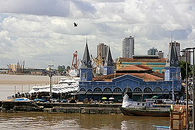
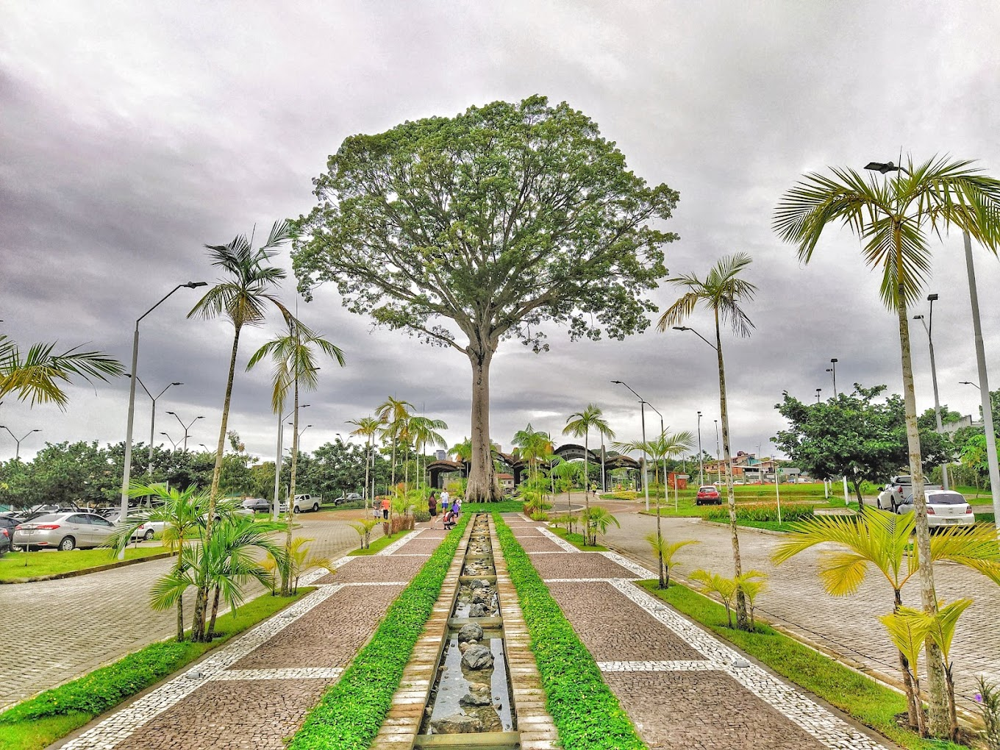
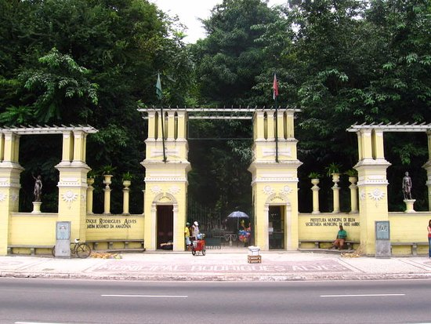

Estação das Docas
A Estação das Docas é um complexo cultural, turístico e gastronômico localizado à beira da Baía do Guajará foi revitalizado no ano 2000 e hoje se transformou em um dos mais belos cartões-postais da cidade.

Mangal das Garças
Um parque ecológico com mirante, borboletário e rica fauna e flora amazônica. Uma síntese do ambiente amazônico no coração da capital paraense. As matas de várzea, os animais da região e mais de trezentas espécies de árvores nativas estão presentes no espaço.

Mercado do Ver-o-Peso
O mercado mais tradicional de Belém, cheio de cores, cheiros e sabores amazônicos. Um dos maiores mercados a céu aberto do mundo, com 25 mil m² de área.

A Basílica Santuário de Nossa Senhora de Nazaré
A Basílica Santuário Nossa Senhora de Nazaré é uma das igrejas mais belas de Belém, apresenta o estilo neoclássico e abriga uma grande quantidade de mármore. A procissão do Círio começa na Catedral de Belém e acaba na Basílica.

Parque Estadual do Utinga Camillo Vianna
O Parque Estadual do Utinga (PEUt) é uma Unidade de Conservação Estadual criada com o objetivo de preservar ecossistemas naturais de grande relevância ecológica e beleza cênica, estimular a realização de pesquisas científicas e, além disso, incentivar o desenvolvimento de atividades de educação ambiental, incluindo o turismo ecológico

Complexo Turístico do Ver-o-Rio
O Complexo Turístico Ver-O-Rio, em Belém do Pará, na beira da Baía do Guajará. Com uma variedade de barracas de comidas típicas, local de realização de grandes festivais musicais, unindo a gastronomia local, a música e a natureza em um só lugar.

Theatro da Paz
O Theatro da Paz foi fundado em 15 de fevereiro de 1878, durante o período áureo do Ciclo da Borracha, quando ocorreu um grande crescimento econômico na região amazônica. É considerado segundo o IPHAN um teatro-monumento e patrimônio histórico, além de ser o primeiro teatro de ópera da Amazônia e um dos primeiros teatros líricos do Brasil.

Bosque Rodrigues Alves - Jardim Zoobotânico da Amazônia
O Bosque Rodrigues Alves abriga mais de 80 mil espécies de flora e fauna, distribuídas na área de preservação ambiental. Dos 15 hectares, mais de 80% são compostos por áreas verdes, e apenas 20% em caminhos para circulação de visitantes.O espaço reserva também uma fauna livre, onde os visitantes podem apreciar de perto os animais.

Forte do Presépio
Forte do Castelo é entrar em contato com a história de Belém do Pará e com as tradições artísticas da região. O museu é formado por dois circuitos expositivos.Do lado de fora e no pátio interno temos acesso ao “Sitio Histórico da Fundação de Belém” composto pela estrutura militar com seu arsenal de artilharia que constitui a primeira edificação portuguesa da cidade.